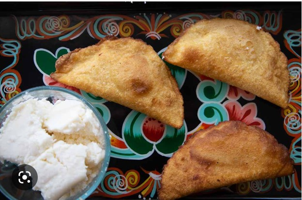

Cheese Empanadas

Description
Cheese empanadas are a pastry filled with cheese and spices. The dough can be
made or purchased, and the filling can include different cheeses and add-ins.
They are baked until crispy, making for a delicious snack or appetizer.
To make cheese empanadas, mix shredded cheese with spices, fill empanada dough,
and bake until golden brown. Enjoy hot as a tasty snack or appetizer.
Ingredients
- Empanada dough (can be either store-bought or homemade)
- Shredded cheese (such as cheddar, mozzarella, or a combination)
- Spices (such as cumin, paprika and powder)
- Salt and pepper
- Water (for sealing the empanadas)
Steps
- Preheat the oven to 190°C and line a baking sheet with parchment paper
- Roll out the empanada dough and cut into circles using a cookie cutter or a small bowl
- Mix together the shredded cheese, spices, salt, and pepper in a bowl
- Spoon a small amount of the cheese mixture onto each empanada dough circle
- Use a small amount of water to moistein the edges of the dough circle
- Fold the dough over the cheese filling to create a half moon shape
- Use a fork to crimp the edges of the dough to seal the filling inside
- Place the empanadas on the prepared baking sheet
- Brush the tops of the empanadas with beaten egg or milk for a golden crust
- Bake the empanadas for 15-20 minutes or until the dough is goldden brown and crispy
- Remove from the oven and let cool for a few minutes before serving. Enjoy hot as a delicious
snack or appetizer